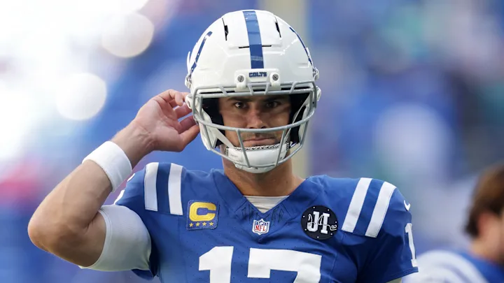
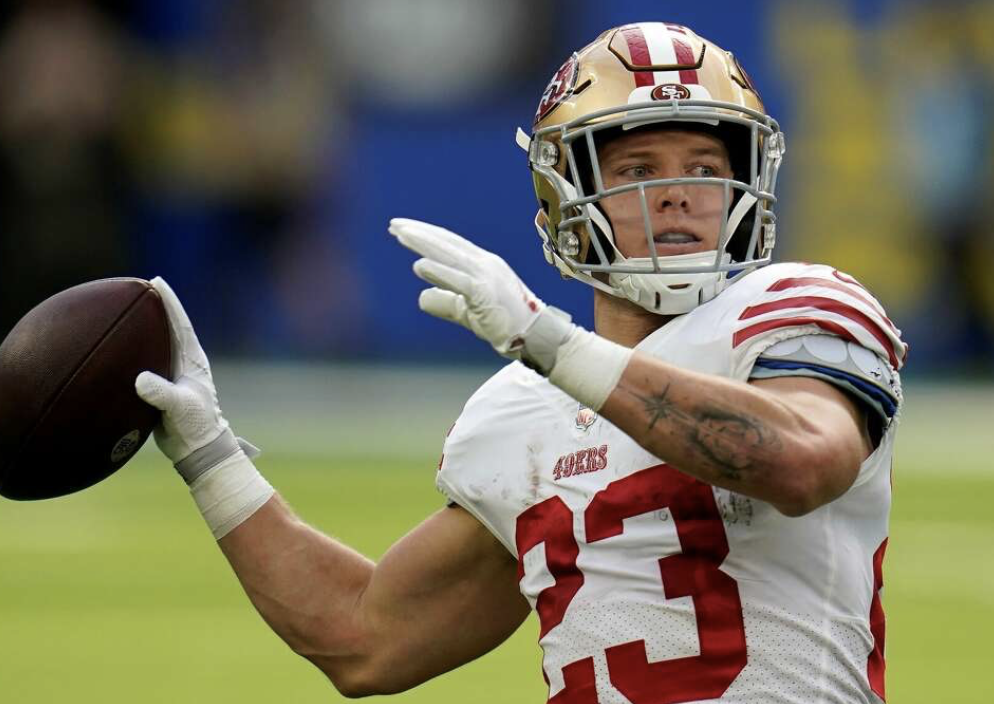
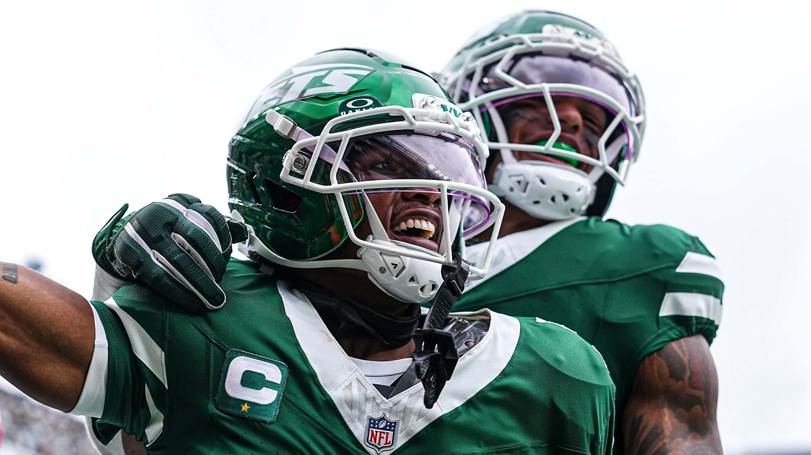
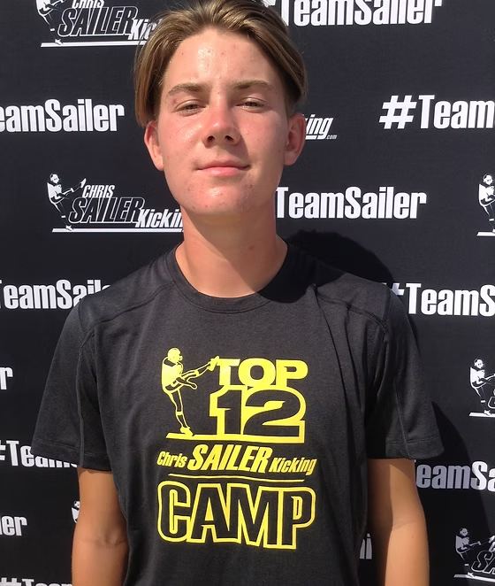
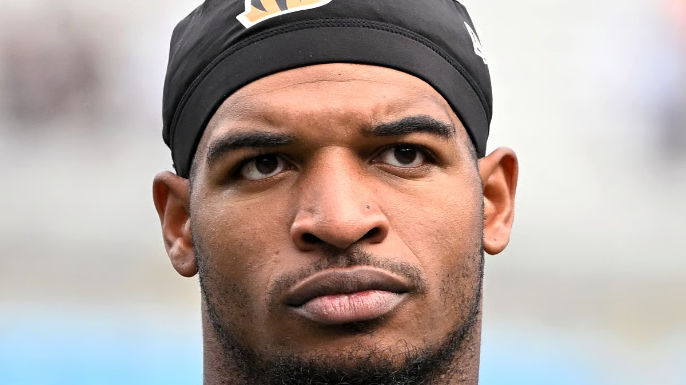
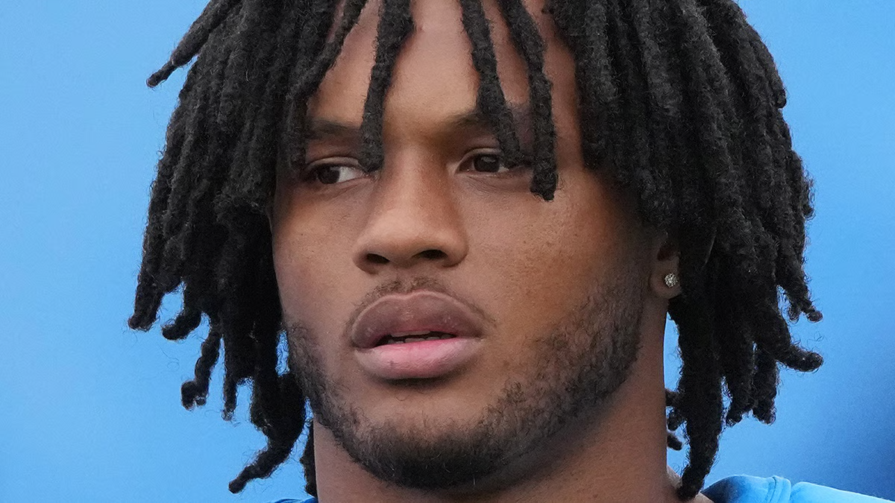
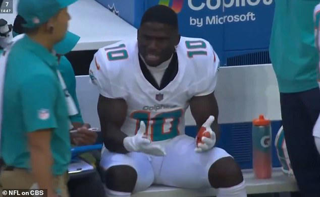
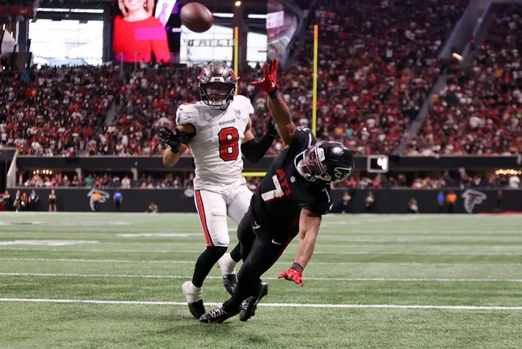
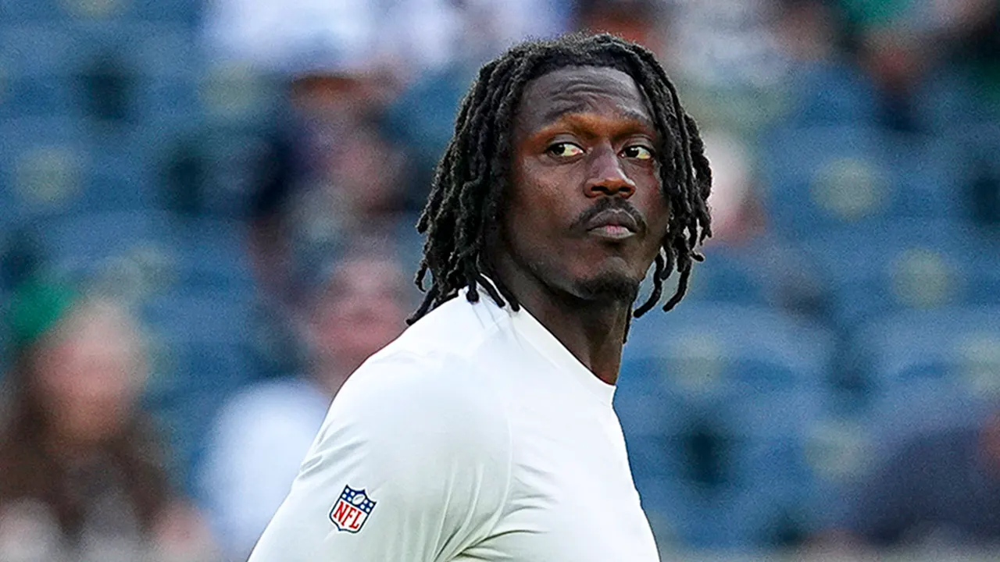
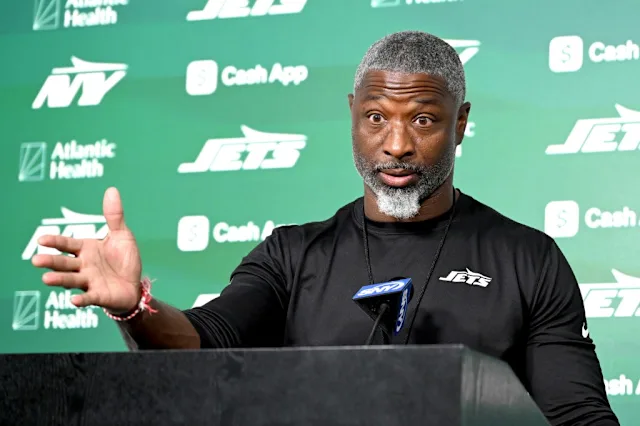

After one week, I know one thing - Daniel Jones is here to say…
Classic week one - everyone sucked and we should totally not overreact......... so let’s do exactly that!
Matchup of the Week: We have a nice distribution of 1-0 vs 0-1, so it’s hard to pipoint one matchup… but here we are…
I’m Sorry Mc-Jackson (1-0) vs. Mr. Turna 2-to-uh-4 (1-0) No one knows what Andy’s team name means, still. But this is a good one,
Lamar, Andy’s moniker from years past, faces off against Jeanty’s slow start and other so-sos.
One team’s going to have a huge leg up at 2-0 going into week three.
Bowers OUT is going to hurt, and Seif still doesn’t have a kicker (fuck you for beating me without one!), so Seif’s gonna have to drop someone of worth this week to stay undefeated. For Andy’s squad, can Chase Brown continue as a RB1, and can Nacua stay on the field? Should be a tight matchup.
Waiver Wire Spice 🌶️ * KJT goes all in on Fannin with Kittle hitting the IR at $36 (with no other bids!) * Joel springs for Hollywood at $21, Chiefs’ time has come and gone. * PJ snags Fields at $17 to Jake’s $1 bid. Fuck you. * In a classic fashion, Quinton Johnston lands on Andy’s squad for $17 after his 2TD debut. He’s okay, can’t play the Cheeks every week!
Let’s overreact to week one, baby!! 🥳

1. Seif (1-0, PF: 129.46 )
Did it without a kicker (FU, Seif!)
Overreaction: Christian McCaffery is a league winner. Don’t worry, it’s gonna be okay. Shanahan feeds CMC 31 touches week one after his Questionable status. He just can’t help himself.

2. Pangy (1-0, PF: 132.16)
Ever heard of Josh Allen?
Overreaction: Garrett Wilson and Justin Fields were college teammates, so their chemistry will absolutely continue to work all season.
3. Andy (1-0, PF: 107.42)
Mahomes can do it all on his own, despite the fact that he looks like a fucking idiot with this headband/g-string. If he doesn’t have receivers, he’ll just run it himself.
Overreaction: Jeanty is mid. Got a lucky TD or we’d be having a different conversation.

4. PJ (1-0, PF: 114.74)
Cameron Little is here to fucking stay, sick snag off the waivers.
Overreaction: Bo Nix can’t hang… well, PJ’s already moved on to Fields, even after the win.

5. Tony (1-0, PF: 104.12)
Distributed goodness - Tony’s got a nice spread of good without great: Kryren, Kamara, Ladd andB Breece all showed up.
Overreaction: #1 CURSE - Ja’Marr and the Bengals are cooked, probably not ever gonna put up points all year.

6. Neil (0-1, PF: 91.22)
Unimpressive finishes from stars we’re used to seeing produce: nobody over 15pts, but some good signs still.
Overreaction: Hampton is a bust. Did you see anything to dispute this?

7. Jake (0-1, 105.78)
Henry goes crazy, but this team can’t get it done.
Overreaction: Tyreek Hill is washed and has no problems outside of football.
8. Joel (0-1, PF: 99.58)
Damn, this team seems full of stars, but the first week was rough.
Overreaction: Kenneth Walker lost his job. Dig Mark Andrews a grave.

9. Kris (0-1, PF: 107.12)
Of all the teams that lost, Kris had the highest PF. But you gotta prove it my guy! (RIP Austin Ekeler)
Overreaction: God, did you see that catch and run by Bijan? Kris can ride him into the playoffs on that play alone.

10. CJ (0-1, 79.52)
Oof, tough first week. Chris’ team is 1000% a CJ team, with some old heads holding it down.
Overreaction: AJ Brown - not a priority in the Eagles offense any longer.. same as Gibbs, Evans, Kelce and Moore. Long road ahead.
Good luck to everyone besides NEIL- Jake 💋

“I am not into moral victories.”
- Aaron Glenn
… #metoo